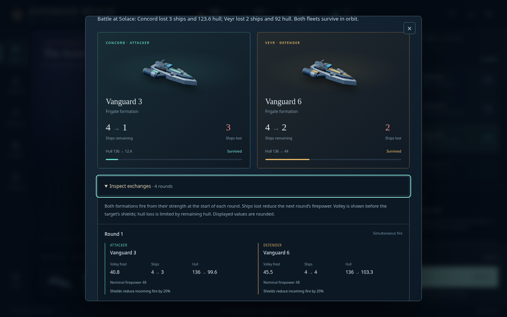
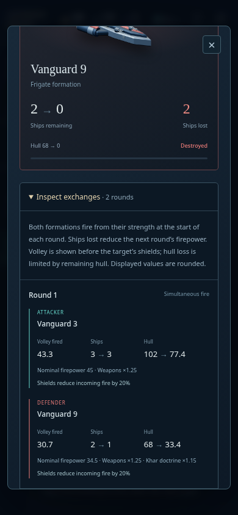

Combat Field Guide · Defensive-order evidence
What happened between the opening volley and the outcome?
New fleet reports let the player inspect the actual exchanges beneath their existing outcome cards. Each round records both formations’ outgoing volleys, ship counts, hull and battle-time modifiers. This explains why a destroyed ship still fires in its final round, why casualties reduce later firepower, and why shields do not make an incoming volley equal the hull lost.
These details come directly from the battle loop. Older reports retain their recorded outcome without reconstructed rounds. Planetary invasions keep their separate bombardment account. The change does not alter damage, costs, random rolls or formation order.

A synthetic four-round engagement. Both formations survive; the attacker can proceed to another defender after this exchange. Opening the detail spends no orders.
Reading a round
| Value | Meaning |
|---|
| Volley fired | This formation’s outgoing fire before the target’s shields and remaining-hull limit. |
| Ships and hull | Actual values at the start and end of the round. Both sides fire from their starting strength. |
| Nominal firepower | Firepower before that round’s variation, including the recorded weapons and faction multipliers. |
| Shields | The reduction applied to incoming fire on this formation. Later research cannot rewrite the recorded value. |
Displayed values are rounded. A positive quantity too small to show at one decimal appears as <0.1. Zero incoming fire preserves exact fractional hull and explicit legacy ship counts. Remaining hull limits the actual loss from an overwhelming volley.
Acceptance evidence
The permanent rules suite contains twelve new tests. Thirteen deterministic fixtures were executed with the unmodified previous engine at a9c61ff, then compared with implementation 080f4f5. Complete command results, post-command states, following-turn results and following-turn states match after removing only the new round metadata. Initial-state fingerprints establish that both engines received identical inputs.
Those fixtures cover ordinary combat, weapons and shields, the Khar modifier, mutual destruction, four-round survival, successive defenders, arrival combat, defensive leads, overkill, fractional hull, zero-fire legacy counts, private AI combat and invasion. Root independently reproduced the same thirteen baseline records exactly. This replay verifies the recorded fixtures; it adds no new samples.
A separate reviewer made fourteen bounded ordinary-command comparisons against the archived prior engine, rejected eight malformed traces and passed four browser cases. Keyboard Enter/Space disclosure, focus, reload, narrow layout, zero-fire hull and a report generated by the old engine all passed. Deleting live participants and changing current technology left historical names and modifiers intact.

The first-round pair remains readable at 390 pixels with reduced motion. No extra portraits or animation loop are added.
These are synthetic boundary fixtures and reproducible engine comparisons. They are not new player campaigns or a balance cohort. The ongoing WATCH campaign remains on its unchanged version-0.14 build.
Reproduce and inspect
The baseline runner requires Node.js, Git and tar, and extracts the pinned revision into a temporary directory. Run from a checkout containing the release history:
node docs/stage15-combat-review/engine/baseline.mjs . /tmp/rounds-baseline.json
cmp docs/stage15-combat-review/engine/baseline-goldens.json /tmp/rounds-baseline.json
node --test tests/combat-rounds.test.js
Thirteen baseline records · Engine fingerprints and method · Independent engine comparisons · Independent browser checks · Review manifest · Root replay and production fingerprints
Round history stays bounded at fifty reports and two hundred exchanges. Old version-1 saves remain valid. All 325 rules tests passed; combined production-browser and hosted release results are recorded in PROGRESS.md.